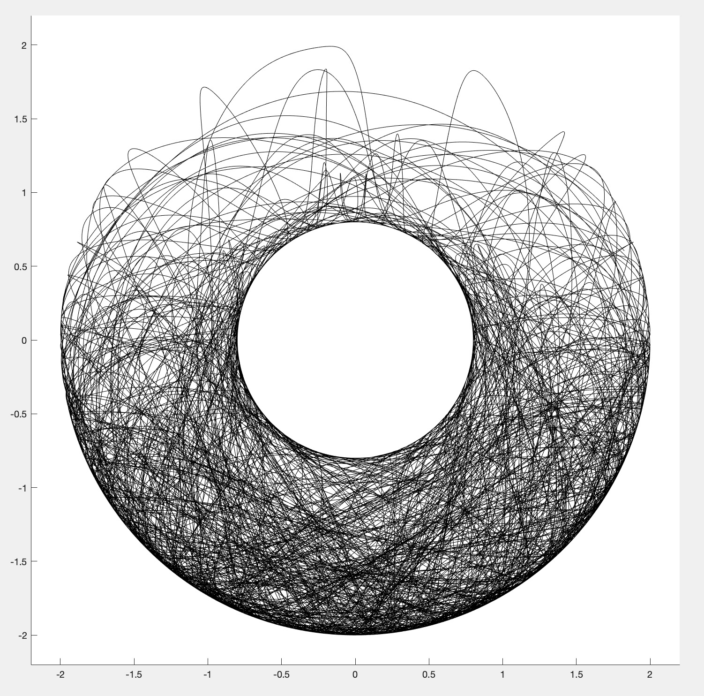

Double Pendulum
A script that simulates the chaotic motion of a double pendulum.
Download Code [.zip]
The following double pendulum simulation was developed via numerical integration of some large differential equations found on Wikipedia (shown below).
The behavior of the system is highly dependent on initial conditions. These are just a few trials in which I changed the lengths of the pendulums. The results lend a juxtaposing dance between randomness and symmetry, a mathematical yin and yang, unveiling that manifested deeply in the inner workings of nature exists beauty in the essence of chaos.